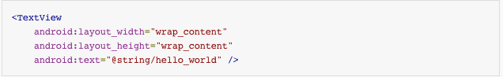
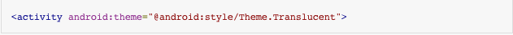
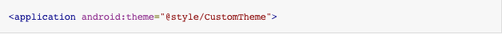
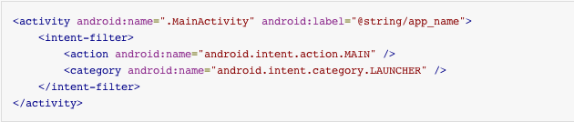
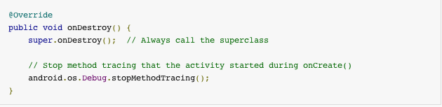

Getting Started
Android Development: Unit 1
Nitya Narasimhan
References
Android Developers Website
Commonsware Tutorials
#1. Getting Started
#1.1 Building The First App
- Creating an Android Project
- Running your application
- Building a simple user interface activity
- Starting another activity
#1.1.1 Create a New Project
Create a default Blank Activity application
#1.1.2 Study the App Manifest
Understand where declared resources are found
#1.1.3 Key elements to remember
- uses-sdk = which devices can app be installed on
- uses-permission = needed to access others' features
- application = declare components, set attribute values
- activity = declare user interface component
- service = declare background task component
- receiver = declare broadcast receiver component
- provider = declare content provider component
- intent-filter = declare actions handled by component
- permission = needed by others, to access its features
#1.1.4 Select Device (Customize)
Tip: Create custom device, use Hardware buttons
#1.1.5 Create AVD (for Device)
Tip: Create at least 1 phone and 1 tablet AVD
#1.1.6 Run App on AVD (for Device)
Tip: Start AVD ahead of time and leave running
#1.1.7 Build a user interface
- Create a Linear Layout
- Add a Text Field
- Add String Resources
- Add a Button
- Make Input Box Fill Screen Width
See Layouts for more info
#1.1.8 Screencast
Click image to download screencast videoTip: See View API for info
#1.1.9 Start Another Activity
- Respond to the Send Button
- Build an Intent
- Start the 2nd Activity
- Create the 2nd Activity
- Receive the Intent
- Display the Message
See Layouts for more info
#1.2 Adding the Action Bar
- Setting up the Action Bar
- Adding Action Buttons
- Stylng the Action Bar
- Overlaying the Action Bar
Read: Action Bar Design for guidelines on style
#1.2.0 What is the Action Bar?
Key design element for Android apps- Make activity actions prominent
- Make view navigation consistent
- Reduce clutter with overflow area
- Dedicated space for brand identity
#1.2.1 Action Bar Elements

- 1. ICON = identity, 'up' affordance
- 2. CONTROL = title, view switching
- 3. ACTION = key activity actions
- 4. OVERFLOW = more activity actions
#1.2.2 Setting up the Action Bar
- Set 'uses-sdk' to API 11 or more
- Set or extend 'Theme.Holo' (default if API 11)
- Include Support Library (for API below 11)
- We focus on Android 4.0.x (ICS and above)
Read: More on Support Library Setup
#1.2.2.1 ActionBar Icon Pack
Provides standard icons for popular actions
13 action categories | Many types/category | 4 sizes/type: hdpi, mdpi, xhdpi, xxhdpi
#1.2.3 Building the Action Bar
- Create a menu resource per activity
- Add item per activity action, to menu
- Create drawable resources (icon), for action
- Inflate menu in onCreateOptionsMenu()
- Handle menu events in onOptionsItemSelected()
REFERENCE: Menu documentation
#1.2.3.1 Specify Actions in XML
#1.2.3.2. Add Actions to Action Bar
#1.2.3.3 Respond to Action Buttons
#1.2.3.3 Before & After
#1.2.3.4 Add an 'Up' Button

First declare the parent-child relationship in Manifest
#1.2.3.5 Add an 'Up' Button
Then enable the feature in onCreate() by calling setDisplayHomeAsUpEnabled()
#1.2.3.5 Before & After
#1.2.4 Styling the Action Bar
Define yours styles in res/styles.xml.
Declare their usage in Manifest
#1.2.4.1 Android Asset Studio
REFERENCE: UI: Styles & Themes
Android Asset Studio
#1.2.4.2 Before & After
#1.2.5 Overlaying the Action Bar

To change visibility:
use hide() or show()
To change position:
use inline or overlay
Overlay gives activity view full screen area
(use transparency)
#1.2.5.1 Implementing Overlay
1. Set android:windowActionBarOverlay to true in a Custom Theme2. Use padding or margin on Activity View layout
to fine-tune placement (if elements obscured)
#1.2.6 About ActionBarSherlock
Use ActionBarSherlock for compatibile views in older (API 10 and below) devices#1.3 Supporting Different Devices
- Supporting Different Languages
- Supporting Different Screens
- Supporting Different Platform Versions
#1.3.1 Support Different Languages
#1.3.2 Transparent Locale-Based Usage
Usage in code
 Usage in other resources (e.g., layout)
#1.3.3 Support Different Screens

Layout = screen size (small, normal, large, xlarge)
Layout = orientation (default=portrait, land=landscape)
Drawable = density (ldpi, mdpi, hdpi, xhdpi)
#1.3.4 Support Different Platforms
 Use Build constants to write
conditional code for a platform
Use themes to adapt app or activity views
#1.4 Managing the Activity Lifecycle
- Starting an Activity
- Pausing and Resuming an Activity
- Stopping and Restarting an Activity
- Recreating an Activity
Read: Activities for more information
#1.4.1 Starting an Activity
- Understand the Lifecycle Callbacks
- Specify your App's Launcher Activity
- Create a New Instance
- Destroy the Activity
Read: Start an Activity
#1.4.1.1 Understand the Lifecycle Callbacks

#1.4.1.2 Specify your App's Launcher Activity
#1.4.1.3 Create a New Instance
#1.4.1.4 Destroy the Activity
#1.4.2 Pause and Resume an Activity
Read: Pausing and Resuming an Activity
#1.4.2.1 Pause the Activity
#1.4.2.2 Resume the Activity
#1.4.3 Stop and Restart An Activity
Read: Stopping and Restarting an Activity
#1.4.3.1 Stop the Activity
#1.4.3.2 Restart the Activity

#1.4.4 Recreate an Activity
Read: Recreating an Activity
#1.4.4.1 Save the Activity
#1.4.4.2 Restore onCreate
#1.4.4.3 Restore the Activity
#1.4.5 Assignment
- Create 'Named' Basic App (Unit 1.1)
- Import the ActivityDemo App (Download zip)
- Update Basic App to add a new "Launch Demo" button
- Bind button to a launchActivityDemo method
- Challenge: Update ActivityDemo to return result